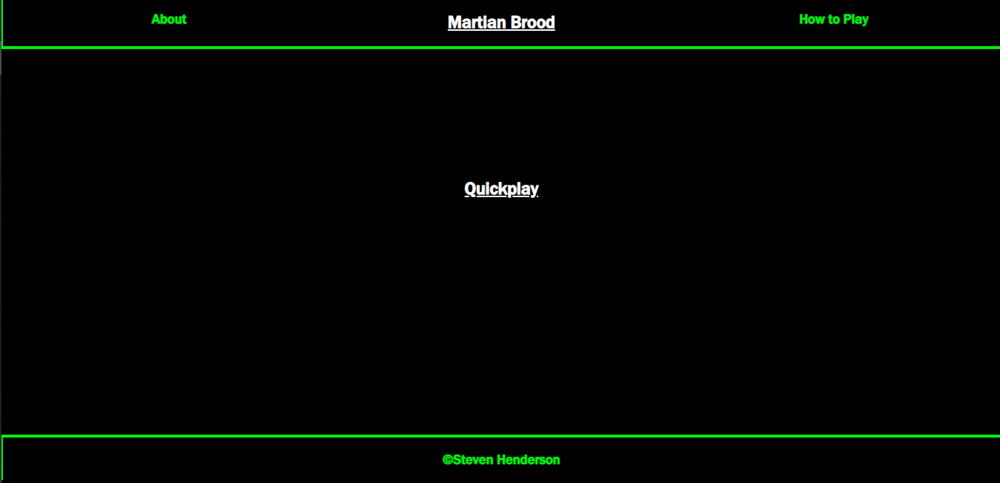
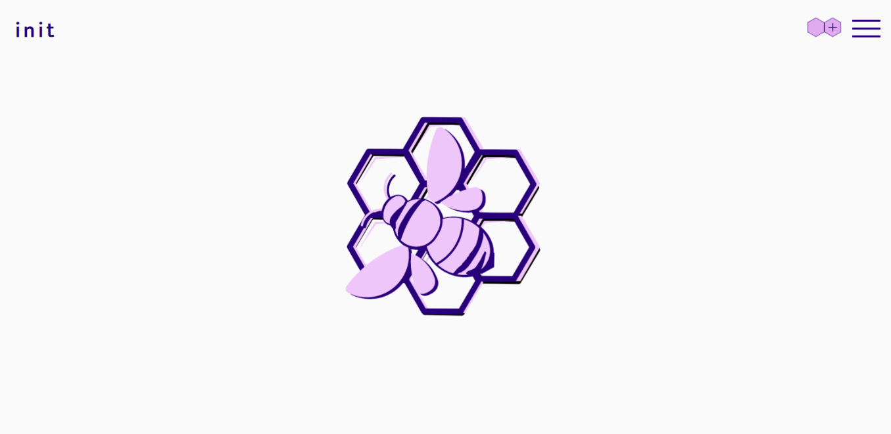

Martian Brood
A Resource Based Management Game
Martian Brood places players in control of managing a colony of aliens on Mars. It is entirely text based and inspired by old strategy games I played in my youth
It's a Full-Stack Application, utilizing React in conjunction with Node.js and databases built out in PostgreSQL. I created it as a fun way of showing my abilities
to create engaging narrative experiences with minimal graphical stimuli. Beyond that, it's also an excellent showcase of my skills with React, principally Components,
Conditional Rendering, and React Router. The Back-End is designed to be sleek, with full RESTful API functionality (including GET, PUT, POST, and DELETE functions)
and plans to include OAuth for a secure User Experience. A lot of love went into the project, and continues to go into it, as I grow in experience and knowledge,
expanding whenever time and creativity permits.
Front-End Github Repository
Back-End Github Repository
Martian Brood

Init
A Social Media App designed for Coders
Init began as a group project near the end of my 2020 Thinkful Engineering Immersion Program. We built a Full-Stack Application that allows Users to create an account,
make posts, follow others and be followed by others, as well as comment on posts. It was a fantastic experience learning how to work in a small team, collaborating creatively
to make something we were all happy with.
Front-End Github Repository
Back-End Github Repository
Init